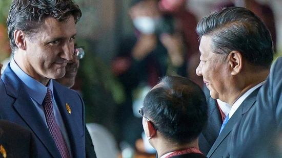

In their Tuesday meeting, the first in three years, Justin Trudeau discussed his concerns about Chinese "interference activities" in Canada on the sidelines of a Group of 20 meeting in Bali.
After media reports claimed that Justin Trudeau raised "serious concerns" over suspected domestic interference by Beijing in his talks with Xi Jinping on Tuesday, on the sidelines of the G20 Summit in Bali, a video has surfaced in which the Chinese president apparently confronted the Canadian prime minister on Wednesday, complaining Trudeau’s office had published details of an earlier conversation between them.
“Everything we said has been leaked to the papers, that’s not appropriate,” Xi says, adding, “that’s not the way the conversation was conducted", The Globe And Mail reported.